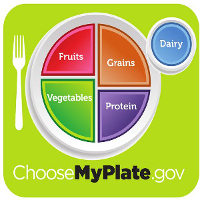

Portion Control
Portion Control will help you create and balance a healthy diet. Therefore, it is very important to understand how to balance your food portions. One of the best ways to practice good portion control is by following MyPlate, a food guide from the U.S. Department of Agriculture (USDA). For example:
- fill half of your plate with vegetables and fruits
- make at least half the grains whole, like oatmeal and brown rice
- try fat-free or low-fat (1%) milk or water instead of sugary drinks
- when you are buying pre-packaged foods, choose the ones that are low in sodium

Resources:
kidshealth.org
choosemyplate.gov
creativecommons.org